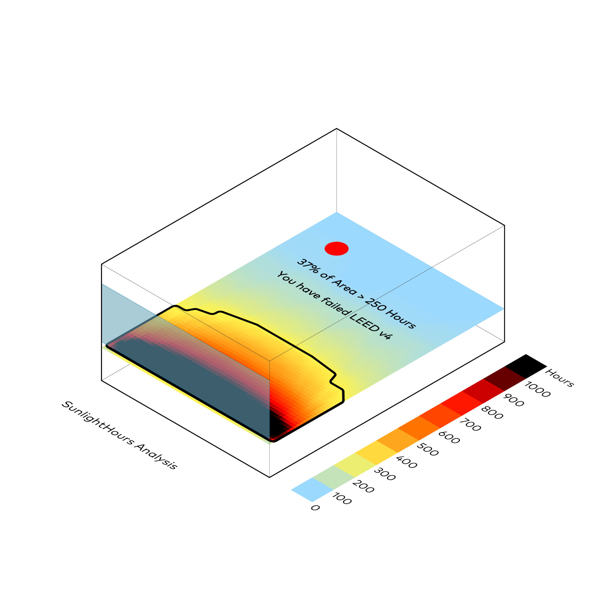
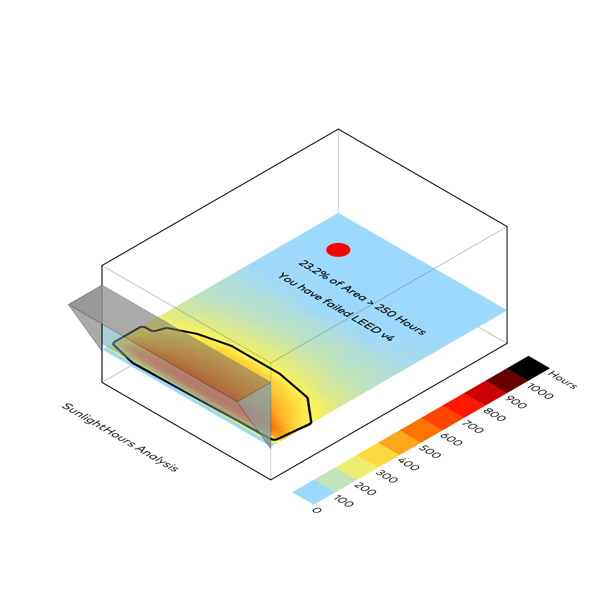
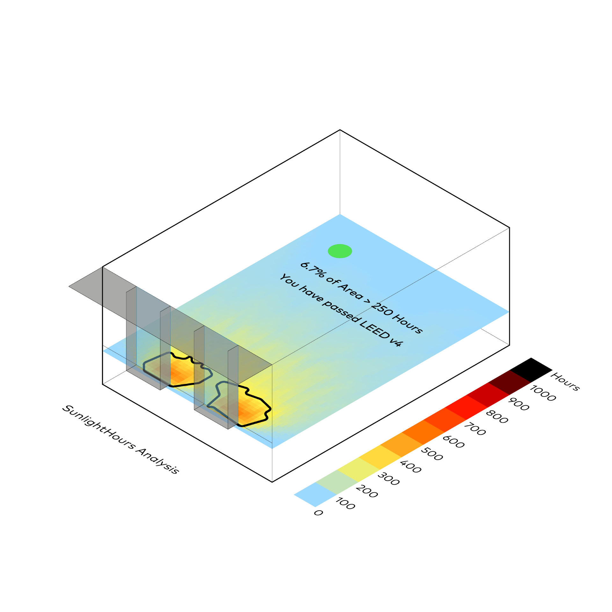

Jährliche Sonneneinstrahlung
Honeybee
Honeybee bewertet ASE (Annual Sun Exposure) – direkte Sonneneinstrahlung >1000 Lux über 250 Stunden/Jahr als Blendungsrisiko. Identifiziert Unbehaglichkeitszonen und Kühllastquellen. Stundengenaue Basis für Verschattungsdimensionierung, Glaswahl, Mikroklima. LEED v4/IES LM-83-12 konform – blendfrei optimieren.
⬤ Honeybee evaluates ASE (Annual Sun Exposure) – direct sunlight >1000 lux over 250 hours/year as a glare risk. Identifies discomfort zones and cooling load sources. Hourly basis for shading dimensioning, glass selection, microclimate. LEED v4/IES LM-83-12 compliant – glare-free optimization.